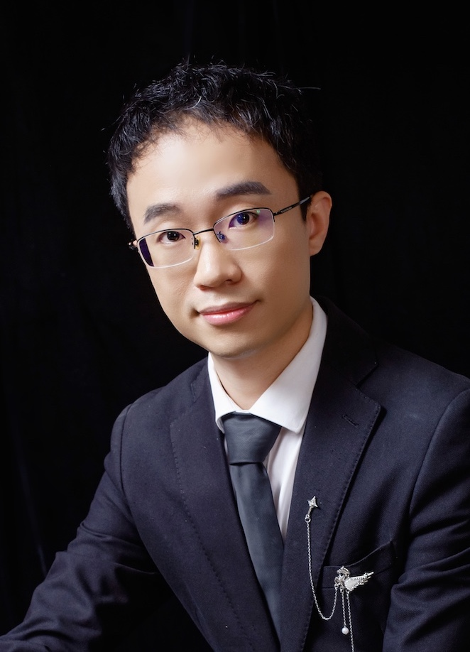

Since March 2021, I am a Ph.D. student in the School of Computer Science and Technology at Harbin Institute of Technology, under the supervision of Prof. Dongwei Ren and Prof. Wangmeng Zuo. I earned my Bachelor's degree from Hohai University in 2016 and completed my Master's degree at Tianjin University in 2021. Currently, I am pursuing a joint Ph.D. program at Harbin Institute of Technology and City University of Hong Kong, under the guidance of Prof. Dongwei Ren and Prof. Kede Ma. My research focuses on computer vision and deep learning.